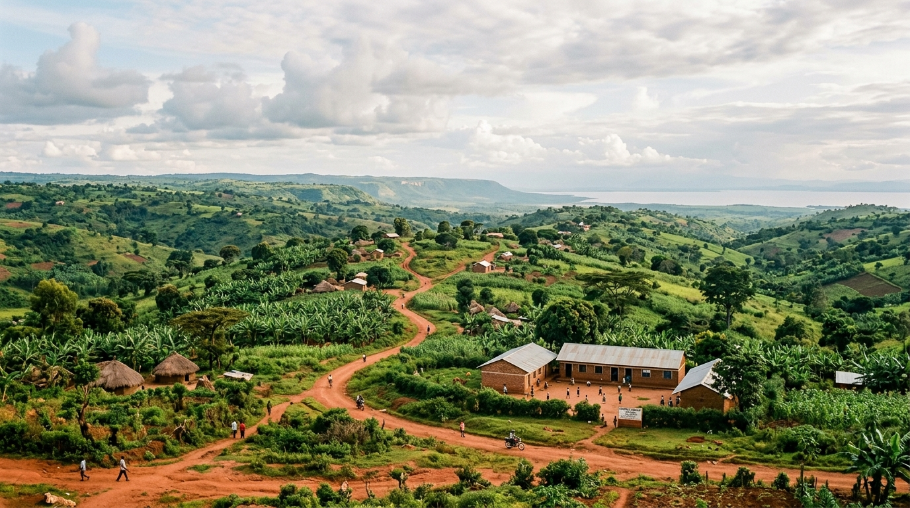

Where We Work
Initial area of focus: Kikuube District, Western Uganda, within Kyangwali Subcounty, with specific consideration for communities situated outside Kyangwali Refugee Settlement.

Host Communities & Refugee Dynamics
ALIH recognises that refugee and host communities can experience different circumstances and needs.
Evidence from Specific Communities
Our work will therefore be informed by evidence from the specific communities we engage rather than assumptions about the population as a whole. We focus especially on underserved villages and households outside the formal settlement perimeter.
Our institutional mapping specifically evaluates eight regional components:
Current Stage: Building the Foundation
ALIH is currently in its foundation and assessment stage. We are deliberately investing in rigorous governance and empirical evidence before committing to broader programmatic rollout.
Institutional Foundation
Building the governance, policies and systems required for responsible, accountable, and legally sound operation.
Community Assessment
Learning directly from communities across Kyangwali Subcounty and understanding local priorities without preconceived assumptions.
Service & Organisation Mapping
Understanding what already exists and who is already working in the area to foster synergy and prevent duplication.
Evidence Gathering
Collecting reliable information and empirical baseline data to guide all future strategic and resource allocations.
Partnership Development
Identifying organizations, institutions, schools, and civic bodies with whom ALIH can collaborate responsibly.
Pilot Development
Designing carefully selected, small-scale interventions based on the evidence gathered before scaling.